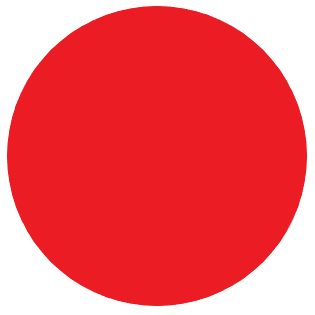
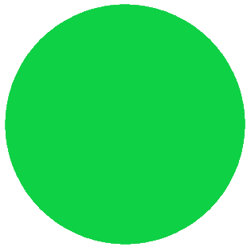

<!DOCTYPE html>
<html lang="en"></html>
<head>
	<title>高科大水產養殖監測系統</title>
	<meta charset='utf-8'> <!--設定讀取的編碼類型-->
	<link rel="stylesheet" type="text/css" href="aside.css">
</head>

<body>
	<div id="warntext_tmp"> ● 溫度正常</div>
	<div id="warntext_orp"> ● ORP值正常</div>
	<div class="aside1" >
		<p id="temptext1" >
			<span style="vertical-align:middle"></span>
			風扇1未開啟
		</p>
		<p id="orptext1" >
			<span style="vertical-align:middle"></span>
			水泵1未開啟
		</p>
		<p>在<span id="warnhistoric1" >XXXX/XX/XX XX:XX:XX</span> 時 <span id="warnhistoric2" >風扇1開啟</span>   </p>
		<p>在<span id="warnhistoric5" >XXXX/XX/XX XX:XX:XX</span> 時 <span id="warnhistoric6" >風扇1關閉</span>   </p>
		<p>在<span id="warnhistoric3" >XXXX/XX/XX XX:XX:XX</span> 時 <span id="warnhistoric4" >水泵1開啟</span>   </p>
		<p>在<span id="warnhistoric7" >XXXX/XX/XX XX:XX:XX</span> 時 <span id="warnhistoric8" >水泵1關閉</span>   </p>
	</div>
	
	<p id="container" style="width: 900px;height:600px;" ></p>
	<!--p id="cameratext"  style="width: 50%">
		</img>
	</p-->
	
	<script src="https://cdn.bootcdn.net/ajax/libs/echarts/5.4.2/echarts.common.js"></script>
	<script type="module" src="main.js"></script>
	<!--script type="text/javascript">
		let dom=document.getElementById('container')
		let myChart=echarts.init(
			dom,
			null,
			{width: '900' , heigh: '600'},
			{ renderer: 'canvas' ,useDirtyRect: false }		
		)
		let option;
		let mod1=1;
		let mod2=1;
		let warncnt1=0;
		let warncnt2=0;
		let tempthreshold=200;
		let orpthreshold=2000;
		let tempreturn=150;
		let orpreturn=1500;
		let warntimes = 20;
		let tempspeednormal=Math.random() * 13 - 5;
		let tempspeedslow=Math.random() * 11 - 8;
		let orpspeednormal=Math.random() * 130 - 55;
		let orpspeedslow=Math.random() * 120 - 75;
		let tmpdata=[]
		let orpdata=[]
		let now=new Date()
		let oneSec=1000
		let tempvalue=100
		let orpvalue=1000
		let Temperature
		let Orp

        //const result = document.querySelector('.result');
		
		function reqError (err) {
		  console.log('錯誤', err)
		}
        // 宣告一個 XHR 的物件
		var request = new XMLHttpRequest(); 
		
		function tempautocnt() {
			now = new Date(+now + oneSec)
			if(tempvalue>tempthreshold) {
				if(warncnt1==warntimes) {
					document.getElementById("warntext_tmp").innerHTML= "● 警告!!警告!!\n溫度已過高!!!";
					document.getElementById("temptext1").innerHTML="<span style='vertical-align:middle'></span>風扇已開啟";
					document.getElementById("warnhistoric1").textContent= [now.getFullYear(), now.getMonth() + 1, now.getDate()].join('/') + " " +[now.getHours(), now.getMinutes(), now.getSeconds()].join(':');
					document.getElementById("warnhistoric2").innerHTML= "風扇1開啟"
					warncnt1++;
				}
				else if(warncnt1>warntimes) {
					mod1=2;
				}
				else {
					mod1=1;
					warncnt1++;
				}
			}
			else if(tempvalue>tempreturn) {
				if(warncnt1>warntimes) {
					mod1=2;
				}
				else {
					mod1=1;
					warncnt1=0;
				}
			}
			else {
				mod1=1;
				document.getElementById("warntext_tmp").innerHTML= "● 溫度正常";
				document.getElementById("temptext1").innerHTML="<span style='vertical-align:middle'></span>風扇1未開啟";
				if(warncnt1>1) {
					document.getElementById("warnhistoric5").textContent= [now.getFullYear(), now.getMonth() + 1, now.getDate()].join('/') + " " +[now.getHours(), now.getMinutes(), now.getSeconds()].join(':');
					document.getElementById("warnhistoric6").innerHTML= "風扇1關閉"
				}
				else {
					
				}
				warncnt1=0;
			}
			switch (mod1) {
				case 1 :
					tempvalue = tempvalue + Math.random() * 13 - 5;
					break;
				case 2 :
					tempvalue = tempvalue + Math.random() * 11 - 8;
					break;
				default:
					tempvalue=tempvalue;
			}
			
			return {
				name: now.toString(),
				value: [
				[now.getFullYear(), now.getMonth() + 1, now.getDate()].join('/') + " " +[now.getHours(), now.getMinutes(), now.getSeconds()].join(':'),Math.round(tempvalue)
				]
			}
		}
		
		function orpautocnt() {
			if(orpvalue>orpthreshold) {
				if(warncnt2==warntimes) {
					document.getElementById("warntext_orp").innerHTML= "● 警告!!警告!!\nORP值已過高!!!";
					document.getElementById("orptext1").innerHTML="<span style='vertical-align:middle'></span>水泵1已開啟";
					document.getElementById("warnhistoric3").textContent= [now.getFullYear(), now.getMonth() + 1, now.getDate()].join('/') + " " +[now.getHours(), now.getMinutes(), now.getSeconds()].join(':')
					document.getElementById("warnhistoric4").innerHTML= "水泵1開啟"
					warncnt2++;
				}
				else if(warncnt2>warntimes) {
					mod2=2;
				}
				else {
					mod2=1;
					warncnt2++;
				}
			}
			else if(orpvalue>orpreturn) {
				if(warncnt2>warntimes) {
					mod2=2;
				}
				else {
					mod2=1;
					warncnt2=0;
				}
			}
			else {
				mod2=1;
				document.getElementById("warntext_orp").innerHTML= "● ORP值正常";
				document.getElementById("orptext1").innerHTML="<span style='vertical-align:middle'></span>水泵1未開啟";
				if(warncnt2>1) {
					document.getElementById("warnhistoric7").textContent= [now.getFullYear(), now.getMonth() + 1, now.getDate()].join('/') + " " +[now.getHours(), now.getMinutes(), now.getSeconds()].join(':');
					document.getElementById("warnhistoric8").innerHTML= "水泵1關閉"
				}
				else {
					
				}
				warncnt2=0;
			}
			switch (mod2) {
				case 1 :
					orpvalue = orpvalue + Math.random() * 140 - 55;
					break;
				case 2 :
					orpvalue = orpvalue + Math.random() * 120 - 75;
					break;
				default:
					orpvalue=orpvalue;
			}
			
			return {
				name: now.toString(),
				value: [
				[now.getFullYear(), now.getMonth() + 1, now.getDate()].join('/') + " " +[now.getHours(), now.getMinutes(), now.getSeconds()].join(':'),Math.round(orpvalue)
				]
			};
		};
		
		for (let i = 0; i < 100; i++) {
			//tmpdata.push(tempautocnt());
			//orpdata.push(orpautocnt());
			tmpdata.push(tempautocnt());
			orpdata.push(orpautocnt());
		}
		option = { 
			title: {
				text: 'Temperature & ORP'
			},
			legend: {},
			tooltip: {
				trigger: 'axis',
				axisPointer:{
					type: 'cross',
					label: {
						backgroundColor: '#283b56',// '#283b56',
						animation: true
					}
				}
				/*formatter: function (params) {	//屬標顯示
					params = params[0];	
					var date = new Date(params.name);
						return (
							date.getDate() +
							'/' +
							(date.getMonth() + 1) +
							'/' +
							date.getFullYear() +
							' ' +
							date.getHours() +
							':' +
							date.getMinutes() +
							':' +
							date.getSeconds() +
							' : ' +
							params.tempvalue[1] //+ ' / ' + params.orpvalue[2]
						);	*/
			},
			xAxis:[{
				type: 'time',
				name: 'time',
				nameGap: '50',
				axisLabel: {
					show: true,
					index: 2,
				},		
				splitLine: {
					show: true
				},
			}],
			
			yAxis:[{
				type: 'value',
				min: 0,
				max: 300,
				interval: 50,
				nameLocation: "end",
				position:'left',
				name:'temp',
				//boundaryGap: ['20%', '20%'],
				//splitNumber: 5,
				axisLabel: {
					show: true,
					interval: 'auto',
					formatter: '{value} ℃'
				},	
			},
			{
				type: 'value',
				min: 0,
				max: 3000,
				interval: 500,
				nameLocation: "end",
				position:'right',
				name:'ORP',
				//boundaryGap: ['20%', '40%'],
				//splitNumber: 5,
				axisLabel: {
					show: true,
					interval: 'auto',
					formatter: '{value} %'
				},				
			}],
			series: [{
				name: 'temp',
				type: 'line',
				//yAxisIndex: 0,
				showSymbol: false,
				data: tmpdata ,
				markLine:{
					nameGap: '50',
					symbol: ['none','none'],
					silent: true,
					lineStyle: {
						normal: {
							type: 'solid',
							color: 'blue'
						}
					},
					data:[{
						yAxis: tempthreshold
					}],
					label: {
						normal: {
							formatter: 'tempthreshold \n\n\n\n\n\n',
							color: 'blue'
						}
					},
				},
			},
			{
				name: 'orp',
				type: 'line',
				//xaxisIndex:0,
				yAxisIndex: 1, 
				showSymbol: false,
				data: orpdata ,
				markLine: {
					nameGap: '50',
					symbol: ['none','none'],
					silent: true,
					lineStyle: {
						normal: {
							type: 'solid',
							color: 'green'
						}
					},
					data:[{
						yAxis: orpthreshold
					}],
					label: {
						normal: {
							formatter: 'orpthreshold \n\n\n\n',
							color: 'green'
						}
					},
				},
			}]
		};
		setInterval(function () {
			for (var i = 0; i < 2; i++) {
				tmpdata.shift();
				orpdata.shift();
                // 定義連線方式
				request.open("GET", 'http://192.168.0.100:5000/value',true);
				// 送出請求
                request.send();
				// 如果成功就執行 reqOnload()
                request.onload = function reqOnload () {
					const test = this.responseText;
					const data = JSON.parse(test);
					Temperature =data.Temperature;
					Orp = data.Orpvalue;
					document.getElementById("results").innerHTML=Temperature;	
					//console.log(data);

				}
				tmp = {name: now.toString(),
					  value: [
					  [now.getFullYear(), now.getMonth() + 1, now.getDate()].join("/") +
						" " +
					  [now.getHours(), now.getMinutes(), now.getSeconds()].join(":"),
					  Temperature,
					  //parseFloat(tempvalue.toFixed(2)),
					  ]
				}
				orp = {name: now.toString(),
					  value: [
					  [now.getFullYear(), now.getMonth() + 1, now.getDate()].join("/") +
						" " +
					  [now.getHours(), now.getMinutes(), now.getSeconds()].join(":"),
					  Orp,
					  //parseFloat(tempvalue.toFixed(2)),
					  ]
				}
				//console.log(tmp);
				tmpdata.push(tmp);				
				orpdata.push(orp);				
				
				//console.log(tmpdata)
			};
			myChart.setOption({
				series: [{
					data: tmpdata
				},{ 
					data: orpdata
				}]
			});
		},  1000);
		if (option && typeof option === 'object') {
		  myChart.setOption(option);
		}

		window.addEventListener('resize', myChart.resize);
	</script-->
	
</body>
</html>